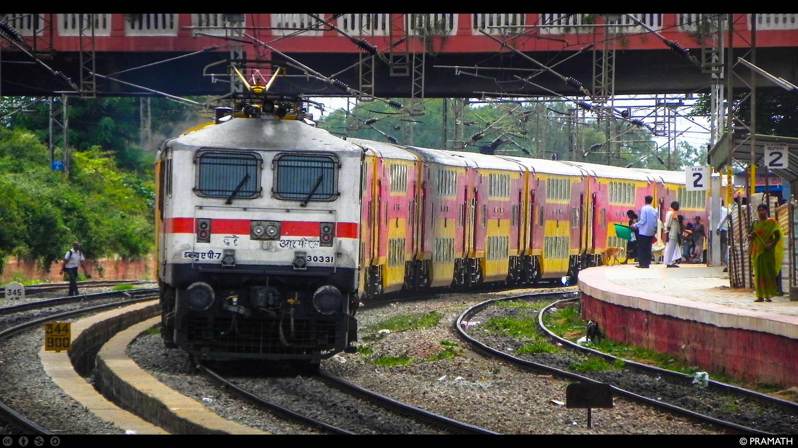

This project focused on analyzing revenue, profit distribution, and regional trends to identify high-performing regions and products, areas with declining margins that require strategic adjustments, and seasonal revenue patterns. It showcased my expertise in spatial analysis, transforming raw data into actionable insights for data-driven business decisions.

This project used data-driven insights to identify international rail expansion opportunities. After analyzing key countries based on rail usage, infrastructure, and economic factors, France was selected for its high tourism volume and market potential, demonstrating the value of strategic prioritization in the railway industry.
This interactive Tableau dashboard provides a comprehensive analysis of sales, profit, and order performance across different regions in the United States. It is designed to help stakeholders, such as regional managers and business analysts, explore key metrics like sales, profit, discounts, and order counts at various geographic levels (state, city, and region). The dashboard combines a map visualization with a linked table sheet to offer both a high-level geographic overview and detailed granular insights.